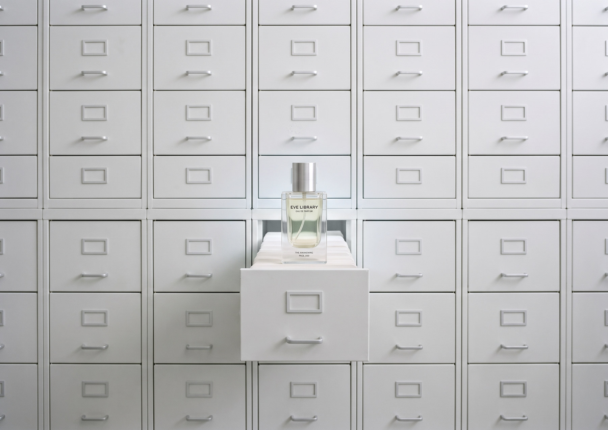

콘셉트 이미지
THE AWAKENING
아직 아무것도 적히지 않은 첫 장
눈을 뜨고, 아직 아무 일도 일어나지 않은 몇 분. 하루가 어디로 갈지 모르는 그때를 떠올렸습니다.The Moment of Awakening
향으로 감각을 깨우고, 나의 순간을 한 페이지씩.
아직 판매 전입니다.

아직 아무것도 적히지 않은 첫 장
눈을 뜨고, 아직 아무 일도 일어나지 않은 몇 분. 하루가 어디로 갈지 모르는 그때를 떠올렸습니다.지우고 남은 한 줄이 내 말이 될 때
처음 쓴 문장은 대개 남의 말 같습니다. 몇 번 지우고 나서야 내 목소리가 남습니다.차갑게 보존된, 빈 종이의 저녁
서고는 그 저녁을 한 줄도 고치지 않고 보존합니다.한 걸음 물러서야 보이는 풍경
가까이서는 복잡하던 것도, 멀리서 보면 제자리를 찾습니다.빛에 닿은 순간만 남은 장면
현상액 속 사진처럼, 아직 다 드러나지 않은 장면.그림은 콘셉트 연출이며, 향조·농도·용량·가격·출시일은 확정 후 안내합니다. 아직 판매 전입니다.
그림은 콘셉트 연출이며, 향조·농도·용량·가격·출시일은 확정 후 안내합니다. 아직 판매 전입니다.